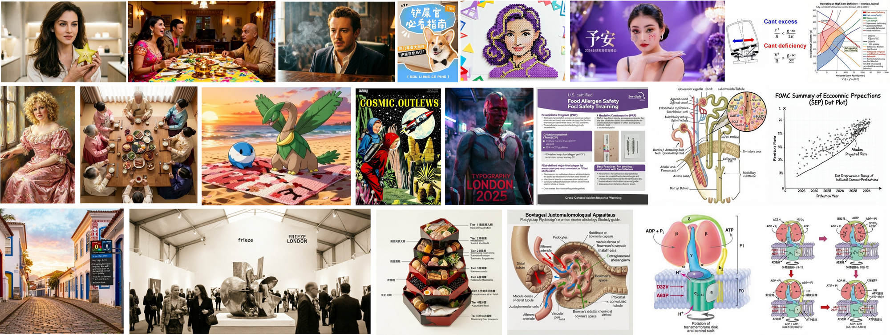
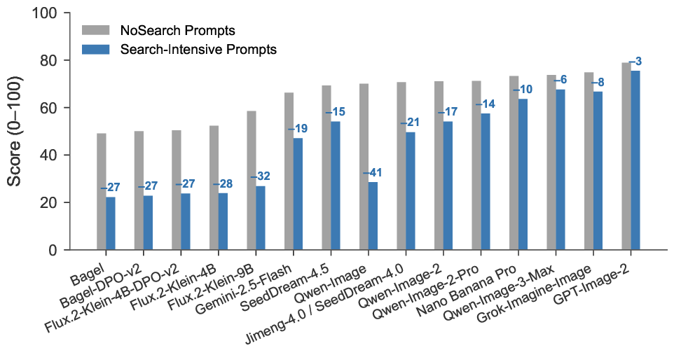
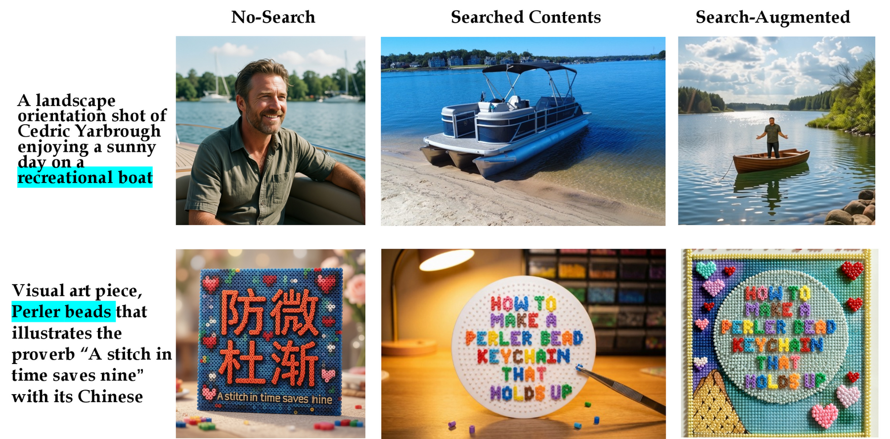
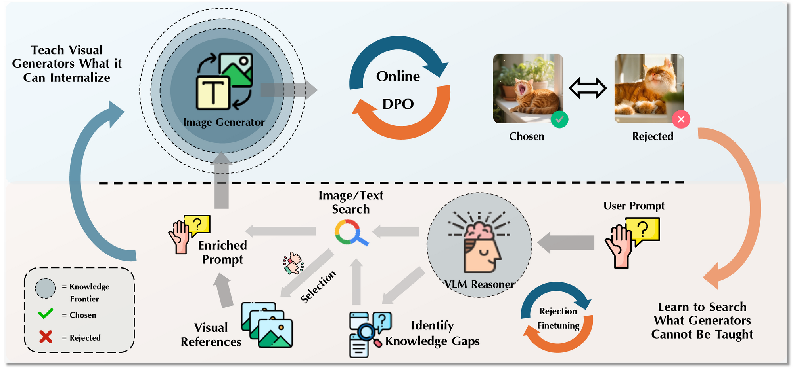
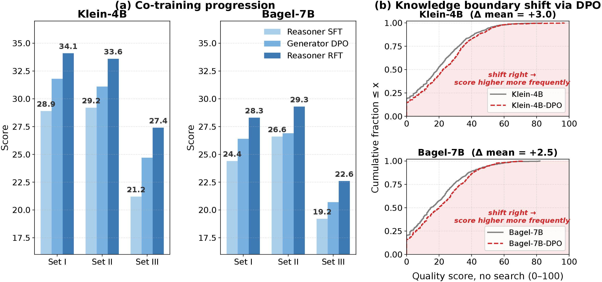
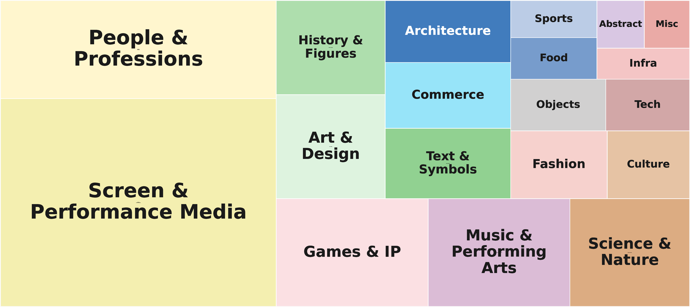

The short version — teach what you can, search the rest
Modern image generators render gorgeously and lie fluently. Ask for the 2025 Osaka Expo mascot and you get a confident, wrong invention. The failure isn't the pixels — it's the knowledge. On SearchGen-Bench, frontier open generators score just 21–28 out of 100 on search-intensive prompts — up to a ~40-point collapse that standard benchmarks never register.
Search is the obvious fix, the way an illustrator consults references. But naive search backfires: it corrupts prompts the generator already handled. The real problem is a knowledge boundary — the line between what a generator can learn and what it must look up. That line is generator-specific, it moves during training, and it can't be hand-drawn. It has to be discovered.
So we discover it, by co-training the generator and the search agent together. Below: how the collapse works, why naive search fails, what the knowledge boundary is, and how a co-trained 8B reasoner on a 4B generator matches a frontier reasoner on the same generator — jump to the finding cards. ↓
They render beautifully. They just make things up.
Ask a frontier image model for the mascot of the 2025 Osaka Expo. You get a polished, confident fabrication. Ask for a historically accurate Spartan phalanx and you get anachronistic armor, rendered in exquisite detail.
The lighting is right. The composition is right. The world is wrong.
This is not a rendering failure. It's a world-knowledge bottleneck. Generators train on fixed corpora with hard knowledge cutoffs; user requests draw on new characters, regional symbols, niche typography, historical artifacts, and events that postdate training.
Worse, generators have no way to flag their own ignorance. They're trained to always output an image — never to say "I don't know what this looks like." So they guess, beautifully, every time.



A 40-point gap that no benchmark shows
Generators that score comparably on standard prompts diverge by nearly 40 points when search-intensive world knowledge is required.
On prompts that need only what a model already learned, open and commercial generators land in the same band (67–75 out of 100). Turn to prompts that need live world knowledge, and the field splits: open generators crater to 21–28, while commercial systems with built-in search barely move. Existing benchmarks test rendering inside known concepts, so they never see this gap at all.
To surface it, we built SearchGen-Bench: 751 test prompts scored by a 9-component judge on a 0–100 scale, with separate dimensions for knowledge and for rendering. The split is the whole point. When Flux.2-Klein-9B scores 24.2 on knowledge checklists but stays high on image quality, the diagnosis is unambiguous — it can draw, it just doesn't know.

Full benchmark breakdown
Scores are on a 0–100 scale; higher is better. Scroll horizontally to inspect all nine judge components.
| Generator | Overall | Checklist | Rubric | Prompt | Image quality | Text rendering | AI naturalness | Composition | Physical plausibility | Visual reference |
|---|---|---|---|---|---|---|---|---|---|---|
| NoSearch parametric knowledge is sufficient | ||||||||||
| Bagel | 49.3 | 52.3 | 49.1 | 39.2 | 58.0 | 18.4 | 48.3 | 65.3 | 60.4 | 34.8 |
| Flux.2-Klein-4B | 51.0 | 54.7 | 51.8 | 39.3 | 61.3 | 13.2 | 49.5 | 67.2 | 63.5 | 32.6 |
| Flux.2-Klein-9B | 57.8 | 63.8 | 59.8 | 51.3 | 63.8 | 31.3 | 52.5 | 72.3 | 66.7 | 43.7 |
| Qwen-Image | 67.4 | 74.8 | 70.8 | 62.8 | 68.3 | 63.0 | 61.0 | 76.8 | 73.8 | 56.7 |
| Qwen-Image-2 | 70.7 | 78.7 | 73.8 | 68.4 | 70.2 | 71.7 | 60.8 | 80.3 | 75.6 | 60.0 |
| SeedDream-4.0 | 67.9 | 74.9 | 70.6 | 61.7 | 69.5 | 71.1 | 59.7 | 80.3 | 73.9 | 56.7 |
| Nano Banana | 63.1 | 71.1 | 67.5 | 59.7 | 66.3 | 42.8 | 56.5 | 76.3 | 68.5 | 53.8 |
| Nano Banana Pro | 75.0 | 82.8 | 78.1 | 72.8 | 71.5 | 85.9 | 65.0 | 83.3 | 78.2 | 67.8 |
| GPT-Image-2 | 71.1 | 78.6 | 75.6 | 70.8 | 69.0 | 67.7 | 60.8 | 77.7 | 73.9 | 64.3 |
| Search-Intensive external knowledge is required | ||||||||||
| Bagel | 21.5 | 18.2 | 17.6 | 13.3 | 30.5 | 2.5 | 29.3 | 33.6 | 36.8 | 13.5 |
| Flux.2-Klein-4B | 24.1 | 19.8 | 18.4 | 12.4 | 37.2 | 4.2 | 33.6 | 39.3 | 46.2 | 11.9 |
| Flux.2-Klein-9B | 26.7 | 24.2 | 23.1 | 17.2 | 36.8 | 7.2 | 32.9 | 40.4 | 48.6 | 16.9 |
| Qwen-Image | 27.9 | 24.8 | 24.3 | 18.6 | 40.1 | 8.7 | 31.6 | 42.8 | 44.6 | 17.7 |
| Qwen-Image-2 | 31.6 | 28.5 | 27.1 | 22.1 | 42.2 | 12.7 | 36.3 | 45.5 | 48.2 | 21.0 |
| Imagen3-Fast | 14.1 | 9.7 | 10.0 | 6.9 | 22.2 | 1.4 | 21.4 | 23.2 | 23.7 | 7.0 |
| SeedDream-4.0 | 45.9 | 44.2 | 43.6 | 38.5 | 57.0 | 35.9 | 47.1 | 58.7 | 64.0 | 35.1 |
| Nano Banana | 44.1 | 41.0 | 40.4 | 36.0 | 57.1 | 28.0 | 47.4 | 61.5 | 65.5 | 33.2 |
| Nano Banana Pro | 65.3 | 64.4 | 63.1 | 60.7 | 71.4 | 65.0 | 62.0 | 75.9 | 78.5 | 58.3 |
| GPT-Image-2 | 71.0 | 71.2 | 70.1 | 69.2 | 75.1 | 75.9 | 64.7 | 80.4 | 77.3 | 66.0 |
Search should help. Often it hurts.
An illustrator handed an unfamiliar brief looks up references before drawing. Give the generator the same move — a reasoner spots knowledge gaps, search fills them, the results feed generation — and you have agentic visual generation. Natural. And, done naively, harmful.
Naive search actively degrades prompts the generator already handles.
Search everything, blindly, and every generator gets worse on prompts that never needed help. Qwen-Image-2 drops from 70.7 to 60.4 on the no-search stratum — a 14.6% relative loss on prompts it already aced.
Two distinct failures explain it. Concept corruption: search fires on something the model already knew, and the retrieved reference overrides correct internal knowledge — a gating failure, searching when it shouldn't. Copy effect: a reference carries so much detail that the generator copies it wholesale instead of borrowing the one missing fact — a filtering failure, keeping too much.

The line between what a model learns and what it must look up
Some knowledge belongs inside the model. A character's canonical look, a flag's fixed geometry — stable, low-dimensional, learnable once and for all. Fire search for it and you only add noise.
Other knowledge belongs outside. It changes faster than retraining cycles, sits too deep in the long tail to ever learn reliably, or needs per-request reasoning. For this, search isn't a nice-to-have — it's structurally necessary. And the tail is enormous: 93.1% of the 31,537 entities in our data appear in just a single prompt. No feasible training set covers that.
Some knowledge is internalizable and search should not fire for it; other knowledge is contextual and search is structurally necessary.
We call the divide between those two sets the knowledge boundary. Here's the twist that organizes the entire paper: the boundary is generator-specific, and it moves. As a generator learns, concepts migrate from "must search" to "already knows." A search policy tuned for a weak generator is wrong for a strong one.
So you can't hand-specify it. And you don't have to. The boundary is discoverable — it falls out of training the generator and the searcher together.
Build a searcher that resists noise. Then move the boundary.
The method has two halves. First, a searcher that doesn't poison the generator. Second, a training loop that finds — and expands — the boundary.
The noise-resistant reasoner: gate, filter, integrate.
⎇ Gate
Decide whether to search. Only gaps rated critical or important trigger a query; the rest are dropped. At most three queries per prompt, or skip entirely. The defense against concept corruption.
☰ Filter
Decide what to keep. Choose the reference that fills the specific gap with the least extraneous baggage. The defense against the copy effect.
✦ Integrate
Decide how it enters. Route visual references through language, not raw pixels: "following Image 1, render the robe in teal and gold." The generator borrows exactly what's named — nothing else leaks in.
Teach-then-search co-training. The boundary only moves when the generator's weights change, so we act on both sides, in order.
Warm-start
Supervised finetuning gives an 8B reasoner (Qwen3-VL-8B) the gate–filter–integrate protocol. Competent, but generator-agnostic: it searches for anything that might be hard.
Teach the generator
Online iterative Diffusion-DPO feeds it search-augmented examples and reinforces its own best outputs. Two things happen at once: it internalizes stable knowledge (the boundary pushes outward), and it learns to use imperfect references without being dominated by them (noise-robustness).
Recalibrate the searcher
The generator is now stronger, so the search policy is stale. Rejection-sampling finetuning rewards trajectories where search actually helped the new generator and discards the rest. Search fires only for what remains genuinely contextual.

Co-training discovers the boundary — an 8B reasoner matches a frontier oracle
Co-training discovers the knowledge boundary: a calibrated 8B reasoner matches a frontier oracle on the same generator.
On Klein-4B, the full co-training progression climbs monotonically to 31.8 overall — matching the frontier Gemini oracle on the very same generator (31.2). Both phases pull their weight: teaching the generator adds +2.8, recalibrating the searcher adds +2.6.
It's also selective, which is the hard part. On prompts that don't need search, the calibrated reasoner lifts the no-search baseline from 49.9 to 56.9 — it learned when to stay quiet, exactly where naive search did damage. And it's generator-specific: a policy tuned for the strengthened generator scores worse on the base one, confirming the boundary is a joint property of the pair, not a fixed property of the prompt.
The headline is the calibration-per-dollar. An 8B reasoner on a 4B generator reaches the same quality as a frontier commercial reasoner on that generator — and the full recalibration cycle fits in 4×8 GPU-hours.
One honest caveat: this is a comparison of reasoners on a fixed 4B generator, not a claim of frontier image quality. In absolute terms, 31.8 still trails a search-integrated commercial system like GPT-Image-2 (71.0) by ~39 points — that gap is generator capacity at the 4B scale, and closing it means scaling the generator, not the recipe.

| Phase | Config | NoSearch | Set I | Set II | Set III | Overall |
|---|---|---|---|---|---|---|
| Phase 0 | Gen-Agnostic (SFT-8B) + Klein-4B | 54.6 | 28.9 | 29.2 | 21.2 | 26.4 |
| Phase 1 | Gen-Agnostic (SFT-8B) + Klein-4B-DPO | 54.0 | 31.8 | 31.1 | 24.7 | 29.2 |
| Phase 2 | Gen-Adaptive (RFT-8B) + Klein-4B-DPO | 56.9 | 34.1 | 33.6 | 27.4 | 31.8 |
| ref | Oracle (frontier API) + Klein-4B-DPO | 55.7 | 33.7 | 33.9 | 26.0 | 31.2 |
| ref | No-Search + Klein-4B-DPO | 49.9 | 28.2 | 26.3 | 20.6 | 25.0 |
Search-augmented generation you can reproduce without an API key
Reproducing this kind of work usually means paying for a search engine and a fleet of generators — and watching your results drift as those services change underneath you. We froze the whole thing.
We release SearchGen-20K (20,839 world-knowledge-grounded prompts across 12 failure categories and 22 domains, a mean of 5.2 knowledge gaps per prompt), the co-training corpus (90,452 reasoning traces, 281,925 generations), and SearchGen-Corpus-1M — 145,642 archived image and web search sessions, 559,973 unique URLs, and 370,733 cached downloads.
Because every search is pre-executed and frozen, you can replay the entire pipeline offline. No live API keys. No result drift. An expensive research workflow becomes a stable substrate for preference learning, reward modeling, search-policy design, and retrieval studies.

A flywheel — and a principle bigger than search
Our recipe is deliberately minimal: one teaching pass, one recalibration pass. Even so, it improves monotonically — which means it can repeat. Each cycle pushes the generator's boundary further out and tightens the search policy further in, converging toward a system where only genuinely contextual knowledge ever triggers a lookup. That's a recursive self-improvement flywheel for world-knowledge-grounded generation.
The tempting objection is that bigger models will simply learn everything. They won't. Training data is finite; the world is not. No model, at any scale, can hold events after its cutoff, entities too rare for any dataset, or culture that keeps evolving. The boundary shifts outward with scale — it never disappears. Co-training finds where it lies for any generator, at any scale.
And search is only the first tool. The same gate–filter–integrate discipline governs when to invoke any tool — image editing, render-as-code, 3D-asset retrieval, structural control. Each fills a different slice of what a generator can't be taught. The knowledge boundary is a general principle for tool use, and the released harness is built to explore it.
Cite this work
@article{wang2026searchgen,
title = {Search Beyond What Can Be Taught: Evolving the Knowledge
Boundary in Agentic Visual Generation},
author = {Wang, Haozhe and Feng, Weijia and Yu, Jinpeng and Liu, Che and
Nie, Ping and Lin, Fangzhen and Liu, Jiaming and Huang, Ruihua and
Lin, Jimmy and Chen, Wenhu and Wei, Cong},
journal = {arXiv preprint},
year = {2026},
url = {https://haozheh3.github.io/SearchGen}
}